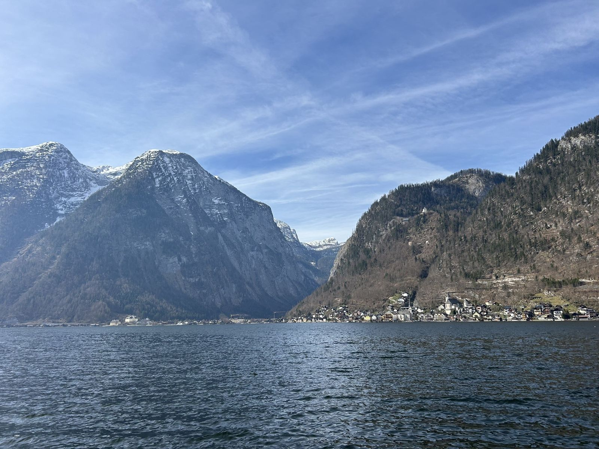
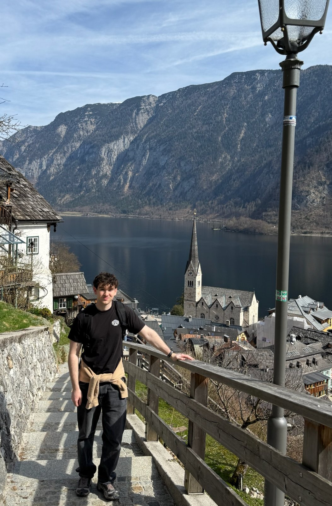
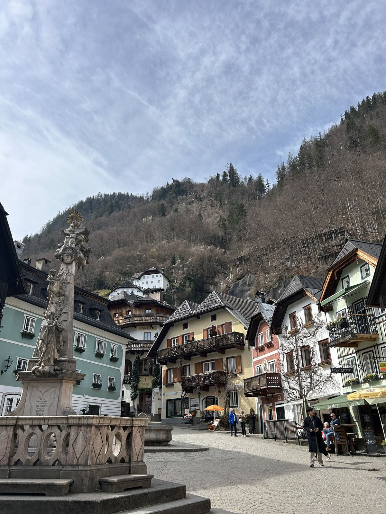

Is Hallstatt Overrated?
I Went to Find Out
Short answer, no. It's that simple (as long as you follow my guide).
Some links in this post are GetYourGuide affiliate links. If you book through one I earn a small commission, at no extra cost to you. How this works.
So, Hallstatt. You've probably seen the photos a hundred times by now (there's even a full-size copy of the town in China), so I wouldn't blame you for wondering whether it lives up to them.
I was really looking forward to it, and it still beat my expectations, which is always a nice feeling. We went as a day trip in the middle of our five days in Salzburg at the end of March, and here's how I'd do it again.
The train and the ferry are half the fun
The journey there is very much part of the day. From Salzburg it's roughly two hours on the train, which you can book cheaply on the ÖBB app before you go. We spent most of it with our faces against the glass, looking out at the mountain passes and alpine lakes going by. Even the houses in the Austrian countryside are pretty!

Our first look at Hallstatt, tucked under the mountains on the far side of the lake.
The train drops you at Hallstatt station, which is on the other side of the lake from the town, and a short ferry takes you across. Please don't skip it and go round by road, because watching the town get closer and closer from the water is the best part of arriving. It looks quite magical sat right on the edge of the lake, and that's the moment I'll remember most from the whole day.
That's where you get the best view of the town as you come in. Bring a layer or two as well, because it can get quite windy out on the water.
Go early, and on a weekday
Hallstatt is tiny, and once the big tour groups come through it fills up fast. They can be a real hassle and take a lot of the magic out of it. Get the earliest train you can manage, and go on a weekday if your trip allows it. We went in late March and still noticed the difference once the groups started arriving, so I can't imagine what a summer weekend is like.
What we did in the town
You don't need a full day here. Three or four hours was plenty for us.
Head up above it first
Climb the stairs up from the main street to the viewpoint. This is where the famous photo is taken, and we had it entirely to ourselves. We sat up there with our packed sandwiches and took it all in, which has to be the cheapest lunch with a view going.

On the way up, with the church and the lake behind me.
Sit down with a drink by the church
This was my favourite bit. We found a spot near the church, got a beer (which was great, by the way) and did some people watching while the bells chimed out across the water. No plan and nowhere to be. If you only do one thing on this list, make it this.

The market square, a minute's walk from the water.
Walk the promenade
The walk along the lakefront is lovely, although it does get busy once the tours arrive (another reason to get there early). There are plenty of shops along it, whether you're after a souvenir or just some clothes. Grab your fridge magnet and an ice cream, you know what you're doing here.
A few more things to do
The salt mine and the Skywalk
Both were shut for works when we went in March 2026, so we couldn't do them, but they've reopened since. Hallstatt roughly means "place of salt", and the mine up the hill is the oldest known salt mine in the world, so it's the whole reason the town is there. The funicular takes you up to the Skywalk, a platform hanging out over the rooftops, and the mine tour starts from the top. Add a couple of hours to your day if you're doing them.
| Mine + funicular | €49 for adults (includes the funicular up and down) |
| Funicular only | €29 return for adults, which gets you to the Skywalk |
| Winter hours | Funicular roughly 9am to 4:30pm, last mine tour mid-afternoon |
| Winter closure | Closed 7 to 29 January 2027 for renovation, and on 24 and 31 December |
Prices and dates from Salzwelten as of November 2026. Check before you go, as they do change.
You can book Hallstatt salt mine tickets on GetYourGuide ahead of time. The entrance ticket skips the queue, and there are tours from Salzburg that include the Skywalk too.
The charnel house
Up in the churchyard above the town there's a small chapel full of skulls, over a thousand of them, many painted with names and flowers. The graveyard ran out of room centuries ago, so bones were dug up and moved in here. I'll be honest, I didn't fancy going in myself, but if you're braver than me it's probably one of the stranger things you'll see in Austria.
The museum, if it rains
There's a museum in the town that's worth popping into on a rainy day, so the weather doesn't have to ruin the trip.
The practical bits
| Train | Salzburg to Hallstatt station, roughly two hours. Book on the ÖBB app ahead of time for the cheaper fares. |
| Ferry | From Hallstatt station across the lake to the town. Stand at the back on the left. |
| When | As early as you can, ideally on a weekday, before the tour groups arrive. |
| Time needed | 3 to 4 hours in the town, plus a couple more for the salt mine. |
| What to bring | Layers for the windy ferry, and a packed lunch from Salzburg. |
If you'd rather someone else sorted the logistics, the half-day guided tour from Salzburg to Hallstatt on GetYourGuide is one of the most booked trips in the city (5.5 hours, free cancellation). You'd miss arriving by ferry though, so I'd go on your own if you can.
So, is it overrated?
No, it's well worth it. I went in excited and still came away surprised, and the thing I'll remember is the town slowly coming out of the water as the ferry crossed the lake.
We were back in Salzburg by mid-afternoon, which felt like exactly the right amount of time. For the rest of that trip (the fortress, the Sound of Music walk and the mountain on the last day) read the full Salzburg post here.